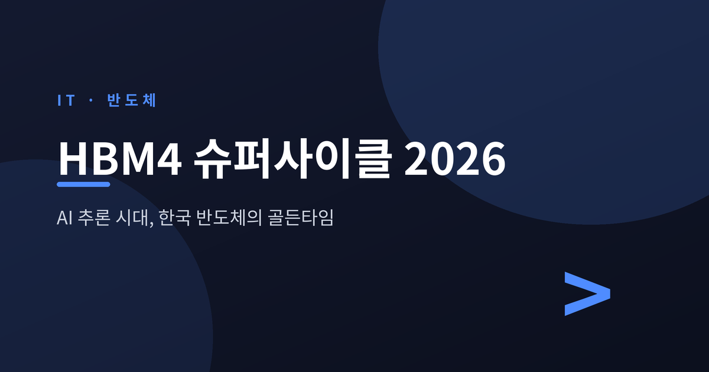
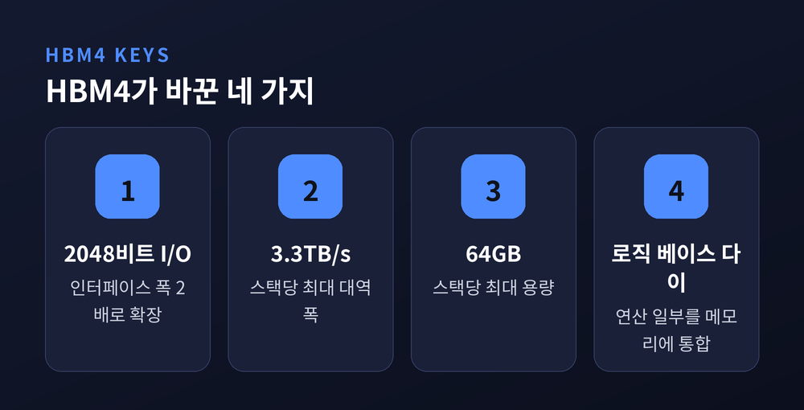
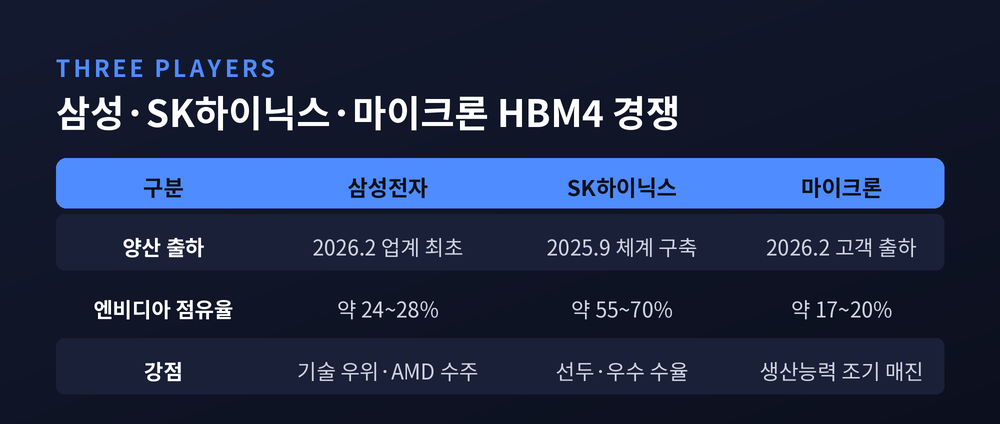
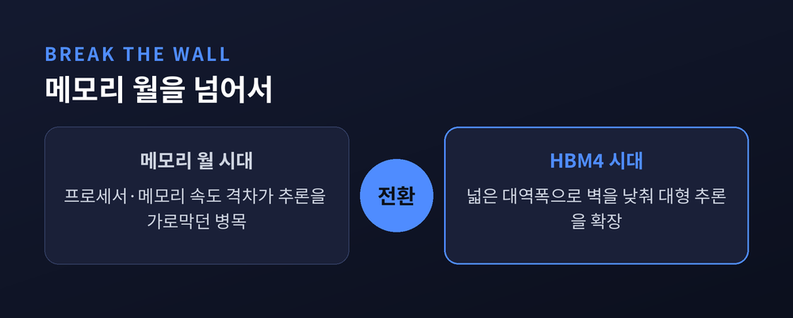

AI 추론 시대와 한국 반도체의 골든타임

이번 글에서는 2026년 메모리 시장의 중심에 선 HBM4를 정리해 보겠습니다.
새 세대 메모리가 왜 AI 반도체의 판도를 바꾸는지, 한국 기업에는 어떤 기회와 위험이 함께 오는지 짚어보려 합니다.
스펙 나열보다는 흐름과 맥락을 중심에 두겠습니다.
HBM은 D램을 수직으로 쌓아 연산칩 옆에 붙인 고대역폭 메모리입니다.
HBM4는 JEDEC 표준으로 확정된 6세대이며, 2026년이 본격 양산의 원년입니다.
핵심 변화는 인터페이스 폭입니다.
이전 세대 HBM3E는 1024비트였습니다. HBM4는 2048비트로 두 배 넓어졌습니다.
예전엔 클럭을 무리하게 끌어올려 속도를 짜냈습니다. 지금은 넓은 길로 데이터를 한꺼번에 흘려보냅니다.
그 결과 대역폭은 스택당 최대 3.3TB/s에 이릅니다. HBM3E의 1.2TB/s 대비 약 2.75배 수준입니다.
용량도 스택당 최대 64GB로 늘었습니다. 조 단위 파라미터 모델을 다루는 데 결정적인 변화입니다.
다만 좋은 점만 있지는 않습니다.
구조가 바뀐 탓에 HBM4는 기존 HBM3/HBM3E 컨트롤러와 호환되지 않습니다. 새 PHY IP와 인터포저 재설계가 필요합니다.

새 메모리에는 그것을 부르는 새 칩이 필요합니다.
엔비디아는 CES 2026에서 차세대 AI 컴퓨트 플랫폼 '루빈(Rubin)'을 공개했습니다.
루빈은 HBM4를 전면 채택한 첫 아키텍처입니다. 표준 구성은 HBM4 288GB를 탑재합니다.
베라 루빈의 HBM4는 총 22TB/s의 메모리 대역폭을 제공합니다. 전세대 블랙웰 대비 약 2.8배 많은 수치입니다.
루빈은 2026년 1월 양산에 들어갔고, 하반기부터 클라우드 사업자에 출하될 예정입니다.
메모리 스택은 SK하이닉스와 삼성전자가 리드 파트너로 공급합니다. 풀 프로덕션 단계에서는 마이크론까지 더해 3사가 공식 공급사로 지명됐습니다.
물론 변수도 있습니다.
루빈 양산 일정이 지연될 가능성이 거론됐고, 그에 따라 일부 공급사의 HBM4 출하가 조정될 수 있다는 보도도 있었습니다.
2026년 HBM4 시장은 3사 경쟁 구도로 재편됐습니다.
삼성전자는 2026년 2월 업계 최초로 6세대 HBM4 상용 양산 출하를 시작하며 기술 우위를 내세웠습니다. AMD 수주 등으로 반전을 노립니다.
SK하이닉스는 선두를 굳히는 쪽입니다. 엔비디아 물량의 상당 부분을 맡아온 것으로 알려졌고, 수율 평가도 우수했습니다.
마이크론은 추격자입니다. 2026년 HBM4 생산능력이 이미 매진됐다고 밝혔습니다.
비교하면 다음과 같습니다.
| 구분 | 삼성전자 | SK하이닉스 | 마이크론 |
|---|---|---|---|
| 양산 출하 시작 | 2026년 2월(업계 최초) | 2025년 9월 체계 구축 | 2026년 2월 고객 출하 |
| 엔비디아 공급 점유율(추정) | 약 24~28% | 약 55~70% | 약 17~20% |
| 강점 | 기술 우위·AMD 수주 | 선두·우수 수율 | 생산능력 조기 매진 |
※ 점유율은 엔비디아 공급 기준 추정치이며 자료마다 차이가 있습니다. 전체 HBM 시장 기준과는 구분해야 합니다.
이미 다음 세대(HBM4E) 샘플 공급도 시작됐습니다. 경쟁의 다음 막은 벌써 열리고 있습니다.

2026년 AI 하드웨어의 초점이 결정적으로 옮겨갔습니다.
예전엔 연산(compute) 성능이 전부처럼 보였습니다. 지금은 메모리 대역폭이 가장 중요한 제약으로 떠올랐습니다.
이유는 추론에 있습니다.
추론형 모델은 긴 맥락과 대용량 캐시를 메모리에 상주시켜야 합니다. 그만큼 대역폭과 용량에 의존합니다.
2026년 AI 학습과 추론은 전체 HBM 수요의 55% 이상을 차지합니다.
프로세서와 메모리 속도의 격차, 이른바 '메모리 월(Memory Wall)'은 거대 모델의 실시간 추론을 막는 벽이었습니다.
HBM4는 이 벽을 겨냥해 설계된 첫 메모리로 평가됩니다.
벽이 낮아지면 길이 열립니다. 수백 조 파라미터를 다루는 희소 구조로의 전환도 가능해집니다.

시장 전망은 가파릅니다.
뱅크오브아메리카(BofA)는 2026년 HBM 시장을 546억 달러로 추정했습니다. 전년 대비 58% 증가한 수치입니다.
다만 시장 규모 추정치는 기관마다 크게 엇갈립니다. 정의와 집계 방식이 다른 탓이라, 단정하기보다 출처를 함께 보는 편이 안전합니다.
한국 경제로 보면 의미가 큽니다.
2025년 반도체 수출은 1,734억 달러로 사상 최고를 경신했고, 2026년에는 이를 넘어설 전망입니다.
그러나 그림자도 함께 봐야 합니다.
현 슈퍼사이클이 영구적이라는 보장은 없습니다. AI 인프라 투자 초기의 일시적 국면일 수 있습니다.
경쟁 심화와 생산능력 확대로 가격이 조정될 가능성도 제기됩니다.
수요가 엔비디아 같은 소수 고객에 집중된 점도 위험입니다. 고객 로드맵이 지연되면 직접 타격을 받습니다.
반도체 대기업은 호황을 누리지만 내수·중소기업은 침체가 이어지는 'K자 양극화' 우려도 여전합니다.
기회와 위험이 같은 자리에 있습니다.
정리하면 이렇습니다.
HBM4는 AI 반도체의 무게중심을 연산에서 메모리로 옮겨놓았습니다.
한국 메모리 기업에게 2026년은 분명한 골든타임입니다. 다만 영원한 봄은 아닙니다.
— "슈퍼사이클의 높이만큼, 다음 골의 깊이도 함께 봐야 합니다."
지금의 흐름이 기회냐고 물으신다면, 기회이되 방심해서는 안 될 기회라고 답하겠습니다.